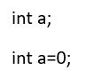

En los diferentes tipos de lenguajes de programación existen varios tipos de variables, las más comunes son enteras, carácter, string, boolean y float.
Variable tipo entero
Son aquellas variables definidas para almacenar números enteros, es decir números como 2, 4, 8, 99999. Por lo general se definen con el prefijo int y se les pueden asignar valores durante su creación.

Una vez creada la variable no es necesario volver a escribir el prefijo int para cambiar su valor.
Variable tipo carácter
Son aquellas variables que se utilizan para almacenar un carácter, puede ser una letra o un símbolo, por lo general se crean con el prefijo char.

Una vez creada la variable no es necesario volver a escribir el prefijo int para cambiar su valor.
Variable tipo string
Son aquellas variables en las cuales se pueden almacenar cadenas de caracteres (palabras o sentencias cortas), tienen un máximo de caracteres predefinido para almacenar, por lo general se crean con el prefijo string.

Una vez creada la variable no es necesario volver a escribir el prefijo int para cambiar su valor.
Variable tipo boolean
Son aquellas variables que solo pueden tomar dos valores de verdad (falso o verdadero), por lo general se crean con el prefijo boolean.

Una vez creada la variable no es necesario volver a escribir el prefijo int para cambiar su valor.
Variables de tipo Float
Son aquellas variables de punto flotante, son variables numéricas que tienen la capacidad de almacenar números con una parte entera y otra parte decimal. Se crean con el prefijo float.

Una vez creada la variable no es necesario volver a escribir el prefijo int para cambiar su valor.